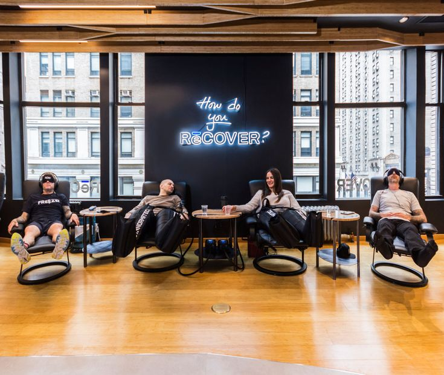

The Science Behind Muscle Recovery
When you exercise, you create microscopic tears in your muscle fibers. It's during recovery that your body repairs these tears, making your muscles stronger than before. Without adequate recovery, you risk overtraining, injury, and plateauing in your progress.
Key Recovery Components
Sleep: The Ultimate Recovery Tool
During deep sleep, your body releases growth hormone, which is essential for muscle repair and recovery. Aim for 7-9 hours of quality sleep per night. Tips for better sleep:
- Maintain a consistent sleep schedule
- Create a dark, cool sleeping environment
- Avoid screens 1 hour before bed
- Limit caffeine intake in the afternoon and evening
Nutrition for Recovery
What you eat post-workout significantly impacts recovery:
- Protein: Essential for muscle repair (20-30g within 2 hours of workout)
- Carbohydrates: Replenish glycogen stores
- Healthy fats: Reduce inflammation
- Hydration: Replace fluids lost through sweat
Active Recovery
Light activity on rest days can enhance recovery by increasing blood flow to muscles:
- Light walking or cycling
- Yoga or stretching
- Swimming
- Foam rolling
Signs You Need More Recovery
- Persistent muscle soreness
- Decreased performance
- Mood changes or irritability
- Frequent illnesses
- Sleep disturbances
- Lack of motivation
Recovery Timeline
0-4 hours post-workout: Focus on hydration and initial nutrition
24-48 hours: Muscle repair and glycogen replenishment peak
48-72 hours: Complete recovery for most training sessions